العناد
العناد هو الإصرار على الرفض أو مخالفة التوجيه حتى عندما يكون المطلوب مناسبًا وواضحًا.
كيف نميّز بين التعبير عن الرأي وبين العناد؟
كيف يظهر العناد؟
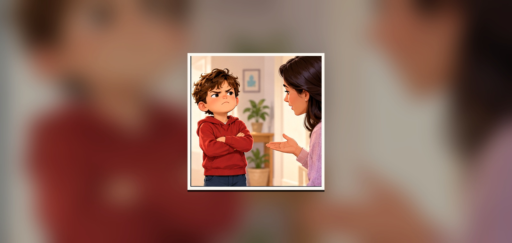
قد يظهر في رفض التعليمات، تشبيك الذراعين، قول «لا» باستمرار أو الإصرار على رأي واحد.
ما السلوك الذي يدل على أن التلميذ لا يريد التعاون؟
أحيانًا يكون وراءه شعور
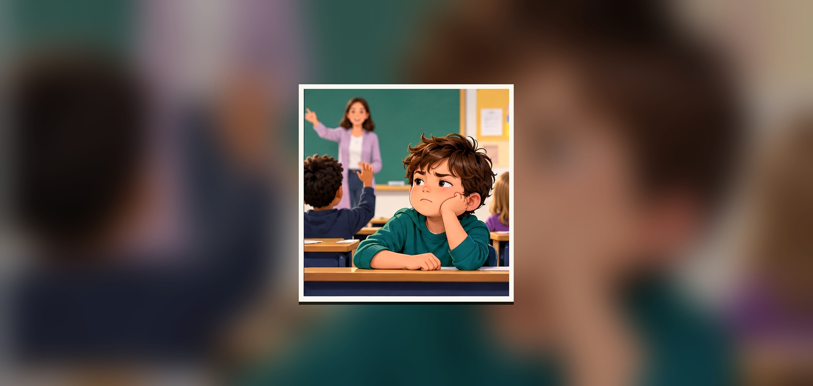
قد يكون الطفل متضايقًا أو متعبًا أو يشعر أن أحدًا لا يسمعه، فيظهر ذلك على شكل رفض.
هل كل رفض يعني أن الطفل يريد أن يزعج الآخرين؟
الغضب يزيد العناد
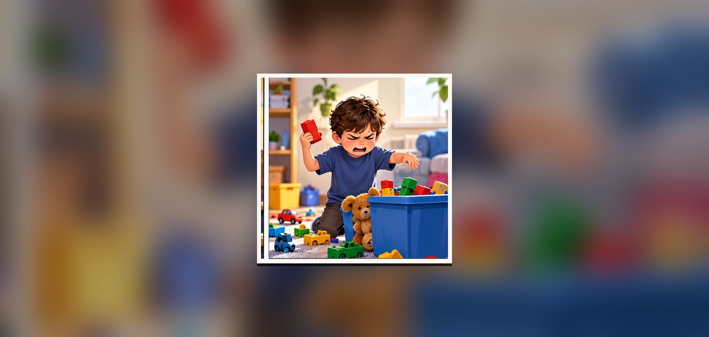
عندما يرتفع الصوت ويزداد التوتر يصبح التفكير أصعب، وقد يتمسك الطفل برأيه أكثر.
ماذا يحدث للموقف عندما يصرخ الطرفان؟
لماذا يعاند الطفل؟
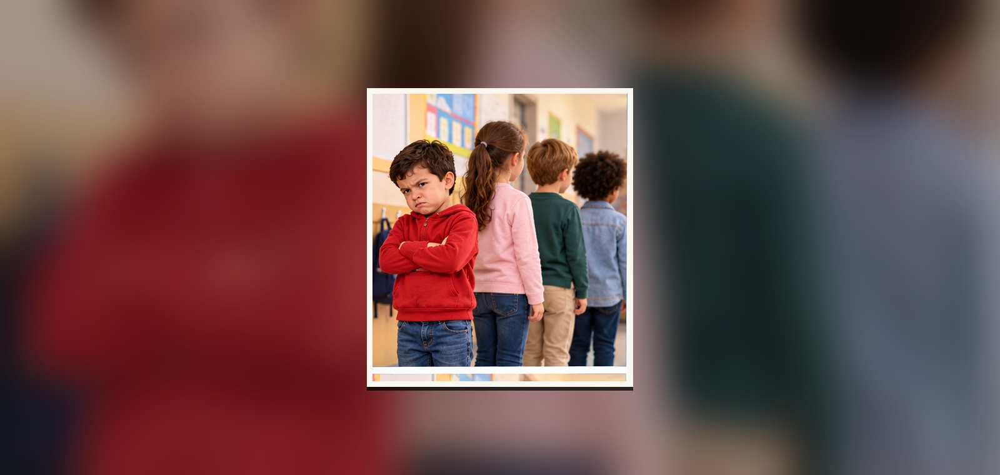
من الأسباب المحتملة: الرغبة في الاستقلال، طلب الانتباه، تقليد الآخرين، أو عدم فهم المطلوب.
أي سبب من هذه الأسباب يمكن أن يحدث داخل المدرسة؟
العناد يؤثر في العلاقات
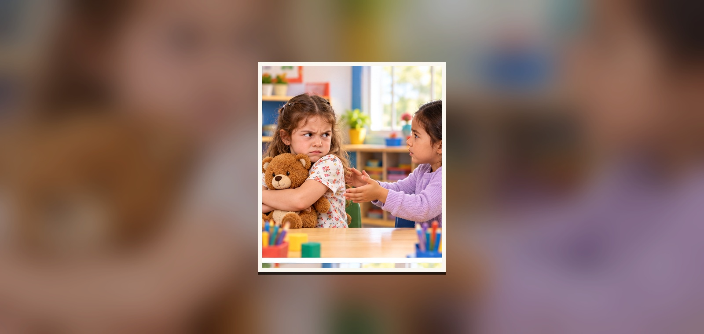
رفض الحوار المستمر قد يسبب خلافات مع الزملاء ويجعل التعاون داخل الصف أصعب.
كيف يشعر الزميل عندما نرفض كل اقتراح يقدمه؟
أبدأ بالاستماع
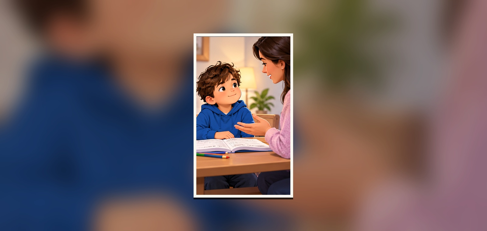
الاستماع بهدوء يساعدني على فهم المطلوب، ثم أعبّر عن رأيي من دون صراخ أو مقاطعة.
ما الفرق بين الاستماع والموافقة على كل شيء؟
أهدئ نفسي أولًا
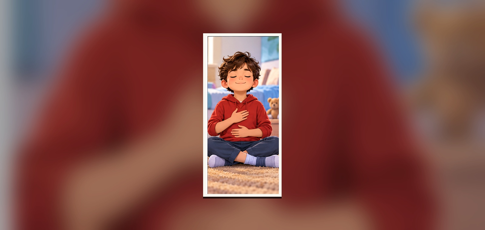
أتنفس ببطء، أهدأ قليلًا، ثم أختار كلمات مناسبة بدل الرد السريع.
ما الذي يساعدك على الهدوء عندما تشعر أنك تريد الرفض فورًا؟
أفكر في حل
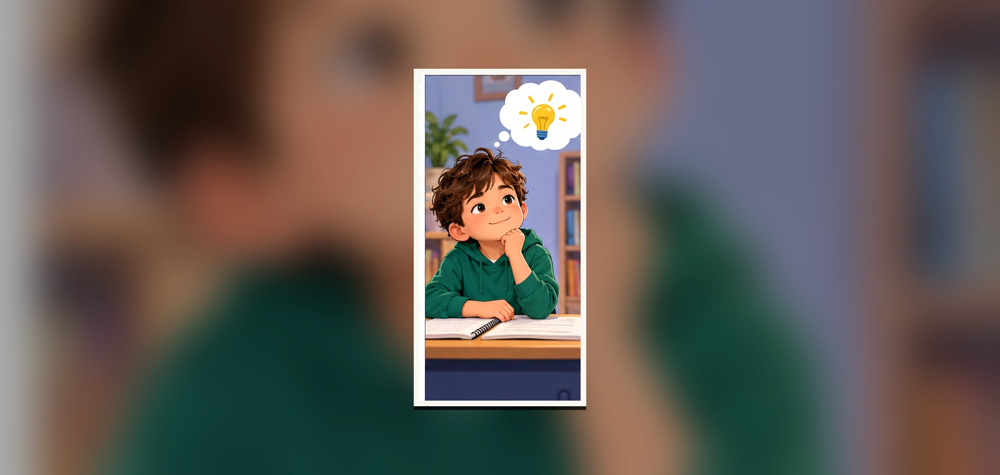
بدل أن أقول «لا» فقط، أفكر في حل أو اقتراح يجعل الموقف مناسبًا لي وللآخرين.
ما العبارة الأفضل من كلمة «لا» وحدها؟
التعاون لا يعني الضعف
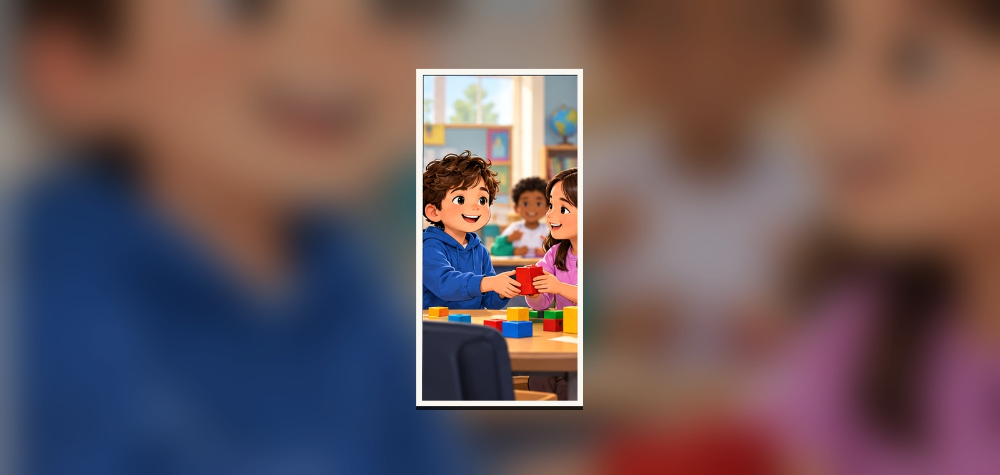
قبول فكرة جيدة أو مشاركة الأدوات والمهام يدل على مرونة واحترام وليس على ضعف.
متى يكون تغيير رأيك تصرفًا ذكيًا؟
الحوار الهادئ يغيّر الموقف
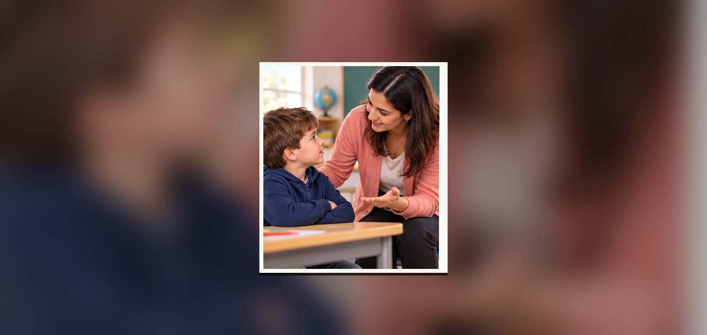
عندما يتحدث الكبار بهدوء ويستمعون للطفل يصبح الوصول إلى اتفاق أسهل.
كيف يمكن للمعلم أن يساعد طفلًا يرفض تنفيذ مهمة؟
الخيارات تساعدني
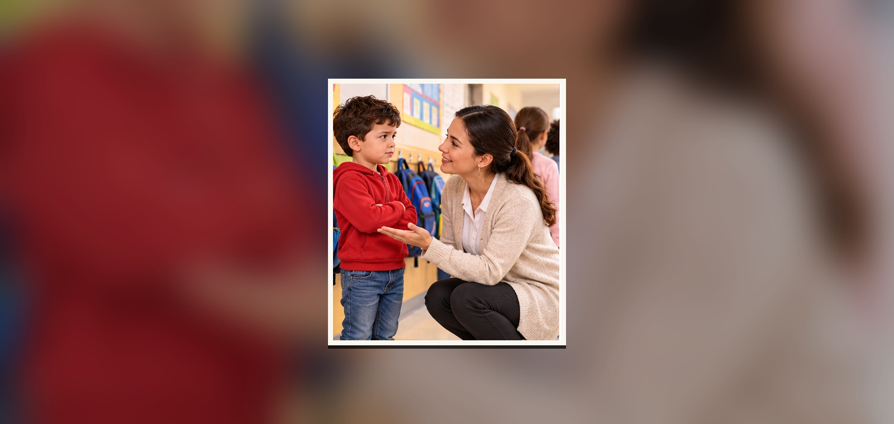
إعطاء خيارين مناسبين يجعل الطفل يشعر بأنه مشارك في القرار بدل أن يشعر بالإجبار.
أيّهما أفضل: «افعل هذا الآن» أم «تبدأ بالقراءة أم بالكتابة؟» ولماذا؟
الأسرة والمدرسة فريق واحد
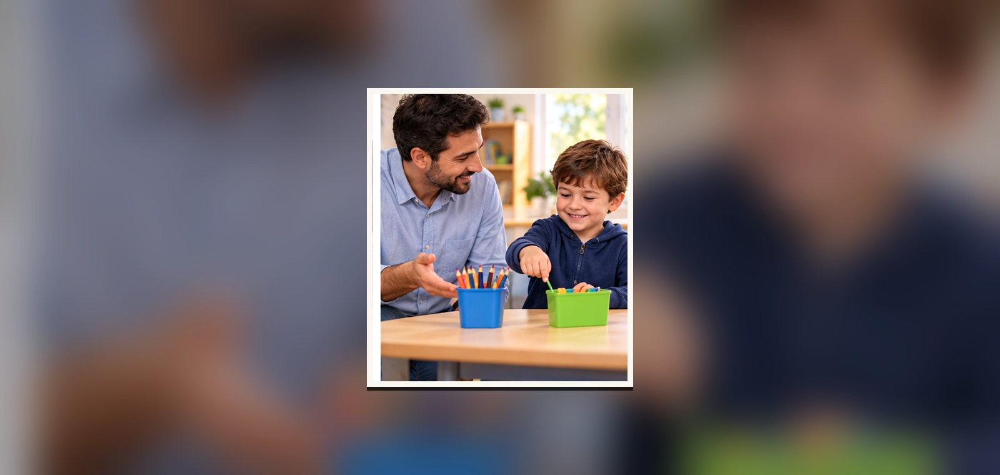
عندما تستخدم الأسرة والمدرسة أسلوبًا هادئًا ومتقاربًا يقل الارتباك ويتعلم الطفل السلوك المطلوب.
كيف يفيد اتفاق البيت والمدرسة على طريقة واحدة للتعامل؟
أشارك وأتعاون
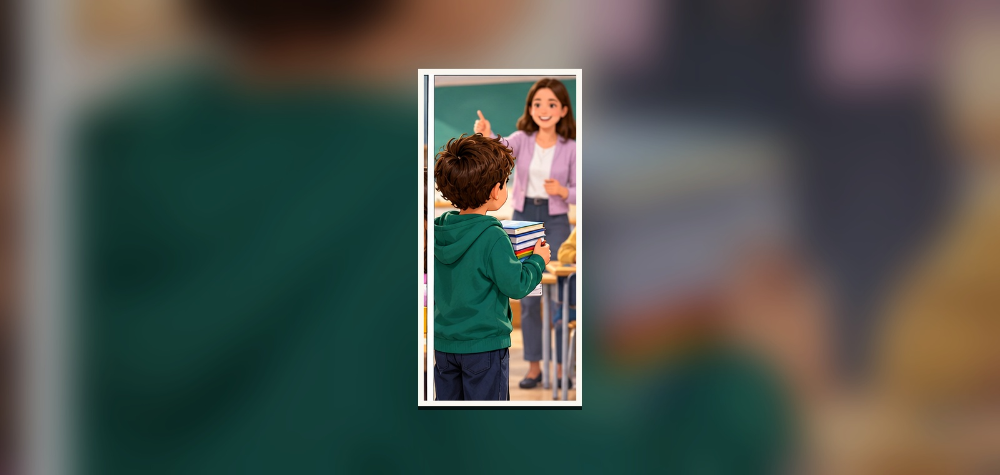
التعاون في النشاط والصف يساعدني على تكوين صداقات والشعور بالنجاح والانتماء.
ما سلوك تعاوني تستطيع القيام به اليوم؟
أستطيع أن أكون أكثر مرونة
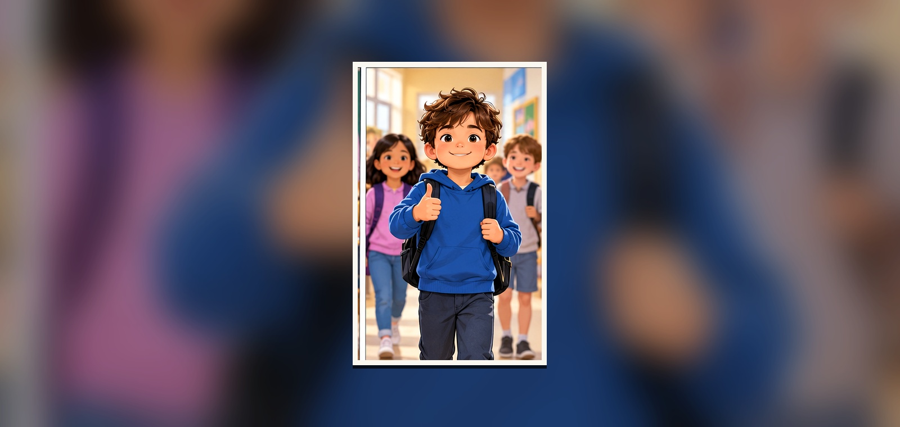
أعبّر عن رأيي باحترام، أستمع، أهدأ، وأقبل الحل المناسب عندما يكون أفضل للجميع.
ما الشيء الواحد الذي ستجربه عندما تشعر أنك مصرّ على الرفض؟